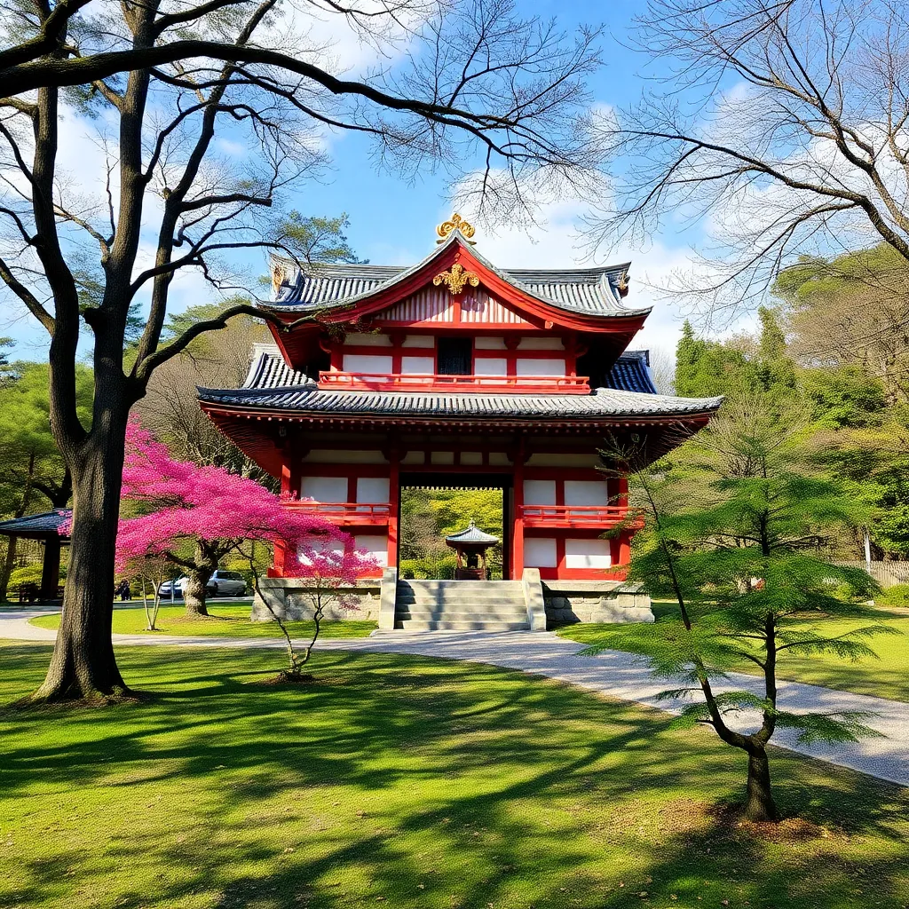

Japan is an island nation located in East Asia
Well Come To
Welcome to our platform, where history, culture, and innovation meet! Explore the rich heritage of
ancient
civilizations, |
Here are lots of interesting desitations to visit,
but don't be confused-they're
already grouped
by
category.
|  | |||||
| Tokyo Tower | Kinkaku-ji
Golden Pavilion |
Fushimi Inari Taisha | Osaka Castle | Nara Park | Universal Studios |
Historical of JapanFrom Ancient Times to |
|
|
|
|
|---|---|---|
|
|
|
|
| Official Name | Nihon-koku(日本国) or Nippon-koku which means "State of Japan" |
|
| Capital | Tokyo | (administrative),Osaka(commercial) |
| Area | Approximately 377,975 square kilometers | (25,332 sq miles) |
| Population | Around 125 million people (as of 2023) | (2023 estimate) |
| Languages | Japanese | English |
| Currency | Japanese Yen(¥,JPY) | |
| Climate | Varies climate: Japan experiences four
distinct seasons.
|
|
| Major Religons | Shintosim and Buddhism | (25,332 sq miles) |
| Independence Day | Japan does not have an Independence Day | (2023 estimate) |
| Goverment Type | Constitutional Monarchy with a Parlimentary
Democracy. |
(link language) |
| Major Industries | Automobiles,Electronics,Robotics,Tourism | (25,332 sq miles) |
| UNESCO World Heritage Sites | Japan has 25 UNESCO World Heritage Sites | (2023 estimate) |
| Natural Resources | 65,610 sq km | (link language) |
| Cultural Festivals | Approximetly 22 million | (25,332 sq miles) |
Tourism And |
Geography And BiodiversityJapan's geography includes four main islands |
Cultural HeirtageJapan,s rich cultural heritage includes 25 |
Cultural HeirtageJapanese cuisine, or washoku, is |